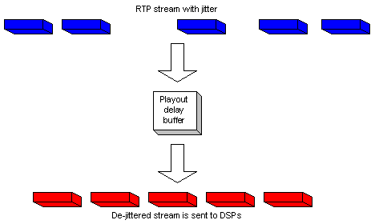
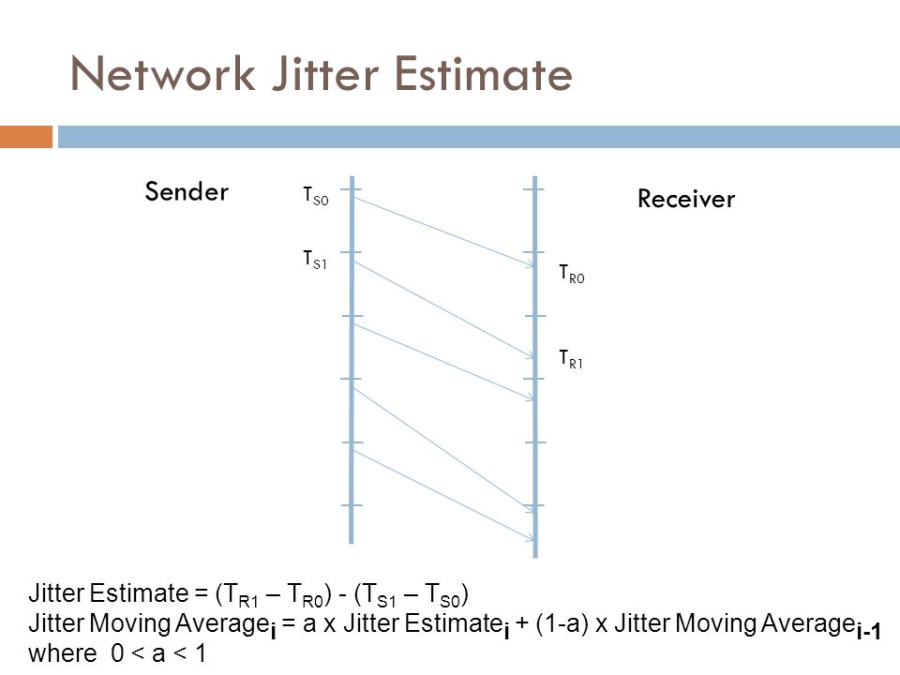

Java |
|
Java is a general-purpose computer-programming language that is concurrent, class-based, object-oriented, and specifically designed to have as few implementation dependencies as possible. It is intended to let application developers "write once, run anywhere" (WORA), meaning that compiled Java code can run on all platforms that support Java without the need for recompilation. Java applications are typically compiled to bytecode that can run on any Java virtual machine (JVM) regardless of computer architecture. As of 2016, Java is one of the most popular programming languages in use, particularly for client-server web applications, with a reported 9 million developers. Java was originally developed by James Gosling at Sun Microsystems (which has since been acquired by Oracle Corporation) and released in 1995 as a core component of Sun Microsystems' Java platform. The language derives much of its syntax from C and C++, but it has fewer low-level facilities than either of them.
The original and reference implementation Java compilers, virtual machines, and class libraries were originally released by Sun under proprietary licenses. As of May 2007, in compliance with the specifications of the Java Community Process, Sun relicensed most of its Java technologies under the GNU General Public License. Others have also developed alternative implementations of these Sun technologies, such as the GNU Compiler for Java (bytecode compiler), GNU Classpath (standard libraries), and IcedTea-Web (browser plugin for applets). |
Javascript |
|
JavaScript, often abbreviated as JS, is a high-level, interpreted programming language. It is a language which is also characterized as dynamic, weakly typed, prototype-based and multi-paradigm.
Alongside HTML and CSS, JavaScript is one of the three core technologies of the World Wide Web. JavaScript enables interactive web pages and thus is an essential part of web applications. The vast majority of websites use it,[9] and all major web browsers have a dedicated JavaScript engine to execute it.
As a multi-paradigm language, JavaScript supports event-driven, functional, and imperative (including object-oriented and prototype-based) programming styles. It has an API for working with text, arrays, dates, regular expressions, and basic manipulation of the DOM, but the language itself does not include any I/O, such as networking, storage, or graphics facilities, relying for these upon the host environment in which it is embedded.
Initially only implemented client-side in web browsers, JavaScript engines are now embedded in many other types of host software, including server-side in web servers and databases, and in non-web programs such as word processors and PDF software, and in runtime environments that make JavaScript available for writing mobile and desktop applications, including desktop widgets.
Although there are strong outward similarities between JavaScript and Java, including language name, syntax, and respective standard libraries, the two languages are distinct and differ greatly in design; JavaScript was influenced by programming languages such as Self and Scheme. |
Jitter |
|
In electronics and telecommunications, jitter is the deviation from true periodicity of a presumably periodic signal, often in relation to a reference clock signal. In clock recovery applications it is called timing jitter. Jitter is a significant, and usually undesired, factor in the design of almost all communications links.
Jitter can be quantified in the same terms as all time-varying signals, e.g., root mean square (RMS), or peak-to-peak displacement. Also like other time-varying signals, jitter can be expressed in terms of spectral density.
Jitter period is the interval between two times of maximum effect (or minimum effect) of a signal characteristic that varies regularly with time. Jitter frequency, the more commonly quoted figure, is its inverse. ITU-T G.810 classifies jitter frequencies below 10 Hz as wander and frequencies at or above 10 Hz as jitter.
Jitter may be caused by electromagnetic interference and crosstalk with carriers of other signals. Jitter can cause a display monitor to flicker, affect the performance of processors in personal computers, introduce clicks or other undesired effects in audio signals, and cause loss of transmitted data between network devices. The amount of tolerable jitter depends on the affected application.


|
Jitter buffer |
|
Jitter buffers or de-jitter buffers are used to counter jitter introduced by queuing in packet switched networks so that a continuous playout of audio (or video) transmitted over the network can be ensured. The maximum jitter that can be countered by a de-jitter buffer is equal to the buffering delay introduced before starting the play-out of the mediastream. In the context of packet-switched networks, the term packet delay variation is often preferred over jitter.
Some systems use sophisticated delay-optimal de-jitter buffers that are capable of adapting the buffering delay to changing network jitter characteristics. These are known as adaptive de-jitter buffers and the adaptation logic is based on the jitter estimates computed from the arrival characteristics of the media packets. Adaptive de-jittering involves introducing discontinuities in the media play-out, which may appear offensive to the listener or viewer. Adaptive de-jittering is usually carried out for audio play-outs that feature a VAD/DTX encoded audio, that allows the lengths of the silence periods to be adjusted, thus minimizing the perceptual impact of the adaptation.
Packet jitter in computer networks
In the context of computer networks, jitter is the variation in latency as measured in the variability over time of the packet latency across a network. A network with constant latency has no variation (or jitter). Packet jitter is expressed as an average of the deviation from the network mean latency. However, for this use, the term is imprecise. The standards-based term is "packet delay variation" (PDV). PDV is an important quality of service factor in assessment of network performance.
Burst transmission or burstiness, i.e. transmitting a burst of traffic at a high rate followed by an interval or period of lower or zero rate transmission, may also be seen as a form of jitter, as it represents a deviation from the average transmission rate. However, unlike the jitter caused by variation in latency, transmitting in bursts is commonly seen a desirable feature, e.g. in variable bitrate transmissions. Usage/Network Parameter Control (UPC and NPC), as implemented in ATM networks, allows both a Maximum Burst Size (MBS) parameter on the average or Sustained Cell Rate (SCR), and a Cell Delay Variation tolerance (CDVt) on the Peak Cell Rate (PCR) at which the bursts are transmitted. This MBS can be derived from or used to derive the maximum variation between the arrival time of traffic in the bursts from the time it would arrive at the SCR, i.e. a jitter about that SCR.
|
Joint Application Development |
JAD |
A facilitated workshop that produces a draft set of requirements. JAD sessions must involve customer representatives. |
JSON |
JavaScript Object Notation |
In computing, JavaScript Object Notation or JSON is an open-standard file format that uses human-readable text to transmit data objects consisting of attribute–value pairs and array data types (or any other serializable value). It is a very common data format used for asynchronous browser–server communication, including as a replacement for XML in some AJAX-style systems.
JSON is a language-independent data format. It was derived from JavaScript, but as of 2017 many programming languages include code to generate and parse JSON-format data. The official Internet media type for JSON is application/json. JSON filenames use the extension .json.
{
"firstName": "John",
"lastName": "Smith",
"isAlive": true,
"age": 27,
"address": {
"streetAddress": "21 2nd Street",
"city": "New York",
"state": "NY",
"postalCode": "10021-3100"
},
"phoneNumbers": [
{
"type": "home",
"number": "212 555-1234"
},
{
"type": "office",
"number": "646 555-4567"
},
{
"type": "mobile",
"number": "123 456-7890"
}
],
"children": [],
"spouse": null
}
|
JSON-RPC |
|
JSON-RPC is a remote procedure call protocol encoded in JSON. It is a very simple protocol (and very similar to XML-RPC), defining only a few data types and commands. JSON-RPC allows for notifications (data sent to the server that does not require a response) and for multiple calls to be sent to the server which may be answered out of order. |
{kind=link}
{kind=link}